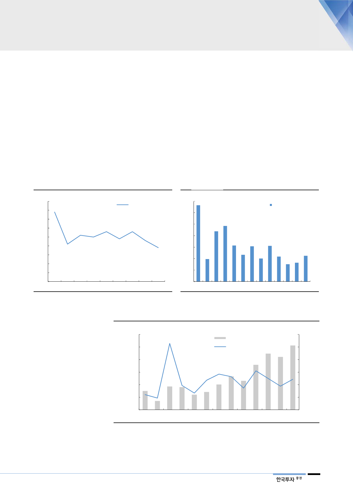

2012년 매크로 충격 후
2013년 회복 시나리오와
유사
지난 4분기 매크로 충격 이후의 디램수급 상황은 2012년 3분기 이후의 상황과
좀 더 유사할 전망이다. 매크로 전망이 회복되고 있지만 당분간 매크로 환경은 우
호적이지 않을 것이라는 점이 2013년 환경과 유사하기 때문이다. 2012년 하반
기 매크로 충격 후 나타났던 메모리산업의 가장 큰 특징은 설비투자의 축소이다.
2012년 메모리산업의 설비투자 규모는 전년대비 33% 감소했다. 2019년 메모리
산업 설비투자는 전년대비 6% 감소하지만 장비설비투자는 20~30% 줄어든다.
2013년 디램 출하 증가율이 23%로 전년의 31% 대비 둔화됐음에도 디램가격이
회복할 수 있었던 이유는 설비투자 감소로 인한 공급조절이 있었기 때문이다.
2019년 디램 수요증가율이 16%로 전년의 매크로 충격이 있던 2018년 15% 대
비 크게 회복하기는 어렵지만 2020년 수요 증가율이 22%로 높아지고 공급업체
의 설비투자 축소 효과가 나타나면서 수급은 회복할 것이다.
[그림 11] 미국 GDP 증가율 추이 및 전망
(% YoY)
4.5
4.0
미국 GDP 증가율
3.5
3.0
2.5
2.0
1.5
1.0
0.5
0.0
2012 2013 2014 2015 2016 2017 2018 2019F 2020F
자료: Bloomberg, 한국투자증권
[그림 12] 디램 수요 증가율 추이 및 전망
(% YoY)
70
60
DRAM 수요 증가율
50
40
30
20
10
0
2008 2010
자료: 한국투자증권
2012
2014
2016
2018 2020F
[그림 13] 메모리산업 설비투자 및 증가율 추이 및 전망
(백만달러)
60,000
50,000
(% YoY)
200
메모리산업 설비투자 금액(좌)
설비투자 증가율(우)
150
40,000
100
30,000
50
20,000
0
10,000
(50)
0
2008
2010
2012
2014
2016
2018F
(100)
2020F
자료: 한국투자증권
7